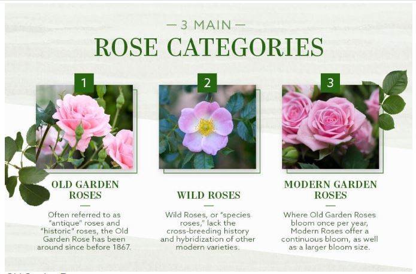

A rose is either a woody perennial flowering plant of the genus Rosa, in the family Rosaceae, or the flower it bears. There are over three hundred species and tens of thousands of cultivars. They form a group of plants that can be erect shrubs, climbing, or trailing, with stems that are often armed with sharp prickles. Their flowers vary in size and shape and are usually large and showy, in colours ranging from white through yellows and reds.
The Rose Union to be established by Cittaslow, the Italy-based movement aiming at slowing down the pace of life in cities and promoting ecological harmony, will be introducing Turkey's black rose to the world. Endemic only to Turkey and growing in the Halfeti district of the southeastern province of Şanlıurfa, the black rose is renowned for its petals which adopt a pitch black hue in March-April and October-November.
Often known as the “mystical rose” because it can give off the vibes of royalty, enchantment, and majesty. The purple rose can come in a variety of shades and the lighter shades are associated with love at first sight as well as true love.
While there are many varieties of roses, most rose specialists would divide them into three categories: Old Garden Roses, Wild Roses and Modern Roses. Most of what you’ll find today in gardens are considered Modern Roses, which were bred to bloom large blooms continuously throughout the season, unlike an Old Garden Rose.
